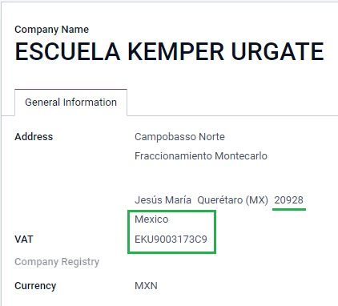
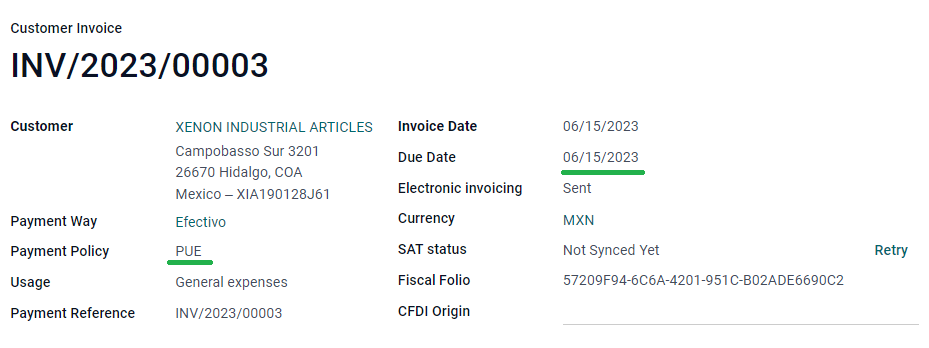
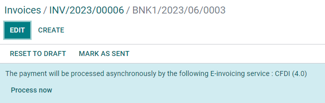

เม็กซิโก¶
การสัมมนาผ่านเว็บ¶
วิดีโอเกี่ยวกับการแปลภาษาของเม็กซิโกยังมีอยู่ วิดีโอนี้แนะนำวิธีใช้การแปลภาษาตั้งแต่เริ่มต้นรวมถึงวิธีการตั้งค่ากำหนดค่าวิธีการทำเวิร์กโฟลว์ทั่วไปและให้ข้อมูลเชิงลึกต้องดูกรณีการใช้งานที่เฉพาะเจาะจงอีกหลายกรณี
บทนำ¶
โมดูลการแปลเม็กซิโกของ Odoo อนุญาตให้ใช้ลายเซ็นอิเล็กทรอนิกส์ใบแจ้งหนี้สำหรับ "เวอร์ชั่น 4.0" ตามข้อกำหนดของ #SATCFDI< http://omawww.sat.gob.mx/tramitesyservicios/Pagnas/documentos/Anexo_20_Guia_de_llenado_CFDI.pdf>`_，ตั้งแต่วันที่ 1 มกราคม 2565 ซึ่งเป็นข้อกำหนดทางกฎหมาย โมดูลเหล่านี้ยังเพิ่มเนื้อหาที่เกี่ยวข้องรายงานทางบัญชี (เช่น #DIOT #,รองรับการค้าต่างประเทศ, และจัดทำคู่มือการจัดส่ง)
Note
หากต้องการลงชื่ออิเล็กทรอนิกส์ในไฟล์ใด ๆ ใน Odoo โปรดตรวจสอบให้แน่ใจว่า * ลงชื่อ *มีการติดตั้งแอพพลิเคชั่น
การกำหนดค่า¶
ข้อกำหนด¶
ก่อนการกำหนดค่าต้องเป็นไปตามข้อกำหนดต่อไปนี้โมดูลการแปลเม็กซิกันใน Odoo:
ลงทะเบียนใน #SAT และใช้ #RFC ที่มีประสิทธิภาพ
มี "ใบรับรองตราประทับดิจิตอล" < https://www.gob.mx/sat/acciones-y-โปรแกรม / ใบรับรองการขายแบบดิจิตอล> `_ (CSD)
เลือก PAC ( Certificate / Authorizedผู้ให้บริการที่ได้รับการรับรอง) ปัจจุบัน Odoo ใช้ PAC ดังต่อไปนี้`โซลูชั่นที่ใช้งานได้จริง < https://solucionfactible.com/ > `_Quadrum (เดิมFinkok）< https://cfdiquadrum.com.mx/ > `_ และ "SW Sapien - เครือข่ายอัจฉริยะ"< https://sw.com.mx/ >`_.
มีความรู้และประสบการณ์ด้าน Odoo Billing, Sales และ Accountingเอกสารนี้ ** เท่านั้น ** มีข้อมูลที่จำเป็นต่อการใช้งานโอดอร์
โมดูลการติดตั้ง¶
:ref:` ติดตั้ง <general / Install>` โมดูลต่อไปนี้เพื่อรับทั้งหมดลักษณะของการโลคัลไลเซชันของเม็กซิโก เอกสาร: "บัญชี" / การบัญชี > `การกำหนดค่านี้ต้องติดตั้ง * ติดต่อ * โมดูล:
ชื่อ-นามสกุล |
ชื่อทางเทคนิค |
คำแนะนำ |
|---|---|---|
: guilabel:` เม็กซิโก - บัญชี ` |
|
ค่าเริ่มต้น: doc:` แพคเกจการแปลทางการเงิน</ การแปลทางการเงิน> `,เพิ่มลักษณะทางบัญชีสำหรับการแปลเป็นภาษาท้องถิ่นของเม็กซิโกเช่น:รายการภาษีและบัญชีที่พบมากที่สุด - ขึ้นอยู่กับบัญชี SATรหัสกลุ่ม< https://www.gob.mx/cms/uploads/attachment/file/151586/codigo_agrupador.pdf >`_. |
:guilabel:`การแลกเปลี่ยนข้อมูลอิเล็กทรอนิกส์ในเม็กซิโก |
|
รวมถึงข้อกำหนดทางเทคนิคและฟังก์ชั่นทั้งหมดที่จำเป็นในการสร้างและใช้งานvalidate: doc:` ไฟล์อิเล็กทรอนิกส์<../ บัญชี / ลูกค้า _ ใบแจ้งหนี้ / e-Invoice > `- อิงตามเอกสารทางเทคนิคที่ออกโดย SAT ซึ่งจะช่วยให้คุณสามารถส่งใบแจ้งหนี้ (มีหรือไม่มีเอกสารแนบ) และการชำระเงินเสริมรัฐบาล |
:guilabel:`EDI v4.0 สำหรับเม็กซิโก |
|
ต้องสร้างเอกสาร XML ที่มีข้อกำหนดที่ถูกต้องCFDI 4.0。 |
:guilabel:` รายงานโลคัลไลเซชันของเม็กซิโก Odo` |
รายงาน l10n_mx |
รายงานการปรับบัญชีอิเล็กทรอนิกส์สำหรับเม็กซิโก: รายการบัญชีนำร่องบาลานซ์ และ #DIOT # |
:guilabel:` เม็กซิโก - รายงานท้องถิ่นกำลังจะสิ้นสุดลง ' |
|
จำเป็นในการสร้างรายการสิ้นสุด (เรียกอีกอย่างว่า * ย้ายวันที่ 13 *) |
:guilabel:` Odoo เม็กซิโก XML Polizas ส่งออก ` |
|
อนุญาตให้ส่งออกไฟล์ XML ของรายการบันทึกประจำวันเพื่อการตรวจสอบบังคับ |
:guilabel:`Odo เม็กซิโก XML Polizas ส่งออกสะพานเอ็ดดี้ |
|
โมดูลเสริม "l10n_mx_xml_polizas" |
Note
ติดตั้งฐานข้อมูลตั้งแต่เริ่มต้นและเลือก: guilabel: "Mexico" เป็นในประเทศ Odoo จะติดตั้งโมดูลต่อไปนี้โดยอัตโนมัติ::guilabel:` Mexico - Accounting',: guilabel:` Mexico e-Data Exchange' และ: guilabel: "การแลกเปลี่ยนข้อมูลอิเล็กทรอนิกส์ในเม็กซิโกรุ่น 4.0"
โมดูลต่อไปนี้เป็นตัวเลือก แนะนำให้ติดตั้งเท่านั้น**หากเป็นไปตามข้อกำหนดเฉพาะ ตรวจสอบให้แน่ใจว่าพวกเขามีความจำเป็นธุรกิจ
ชื่อ-นามสกุล |
ชื่อทางเทคนิค |
คำแนะนำ |
|---|---|---|
:guilabel:` การแลกเปลี่ยนข้อมูลอิเล็กทรอนิกส์ของเม็กซิโก (ฟังก์ชั่นขั้นสูง) ` |
`l10n_mx _ ส่วนขยาย ` |
การเพิ่มเติมการค้าต่างประเทศในใบแจ้งหนี้: ข้อกำหนดทางกฎหมายเพื่อนำสินค้าไปขายต่างประเทศ |
EDI v4.0 เม็กซิกัน (COMEX) |
|
ปรับโมดูล "l10n_mx.edi_extended" เป็น CFDI 4.0 |
: guilabel:` เม็กซิโก - คู่มือการจัดส่งทางอิเล็กทรอนิกส์ |
|
อนุญาตให้คุณสร้าง * Carta Porte *: หนังสือรับรองรัฐบาล: เอกสารอิเล็กทรอนิกส์พร้อมลายเซ็นสำหรับสินค้าที่คุณส่งระหว่าง A&Bเอกสาร |
: guilabel: "คู่มือการจัดส่งทางอิเล็กทรอนิกส์ CFDI 4.0 ในเม็กซิโก" |
|
ปรับโมดูล "l10n_mx_dei_stock" เข้ากับ CFDI 4.0 |
:guilabel:` Odo เม็กซิโกสินค้าคงคลัง / Landing Localization` |
`l10n_mx ยืนฟรี ` |
ช่วยให้การจัดการหมายเลขศุลกากรที่เกี่ยวข้องกับค่าใช้จ่ายของ CIF ทางอิเล็กทรอนิกส์เอกสาร |
กำหนดค่าบริษัทของคุณ¶
หลังจากติดตั้งโมดูลที่ถูกต้องขั้นตอนต่อไปคือการตรวจสอบของคุณบริษัทได้กำหนดค่าข้อมูลที่ถูกต้อง เพื่อการนี้เยี่ยมชม:menusesection:`setting-->general setting-->company'แล้วเลือก: guilabel: "อัปเดตข้อมูล" ภายใต้ชื่อ บริษัท ของคุณ
ป้อนแบบเต็ม: guilabel: `address' ในแบบฟอร์มผลลัพธ์รวมถึง::guilabel: รหัสไปรษณีย์,:guilabel: รัฐ,:guilabel: ประเทศ,และ #RFC(:guilabel: หมายเลข "VAT")
ตามข้อกำหนดของ CFDI 4.0 ชื่อของ บริษัท หลักติดต่อ ** ต้อง ** ตรงกับชื่อธุรกิจที่คุณลงทะเบียนใน #SATไม่มีตัวย่อนิติบุคคล
Important
จากมุมมองทางกฎหมาย บริษัท เม็กซิโก ** ต้อง ** ใช้ท้องถิ่นสกุลเงิน (MXN) ดังนั้น Odoo จึงไม่มีการจัดการการกำหนดค่าทางเลือก หากคุณต้องการจัดการสกุลเงินอื่นให้ MXNเป็นสกุลเงินเริ่มต้นและใช้: doc:` pricelist<../../ sales/sales/products_prices/prices/pricing>`。
จากนั้นไปที่: เมนู: ตั้งค่า -> บัญชี -> ใบแจ้งหนี้อิเล็กทรอนิกส์(MX) --> ระบบการเงินและเลือกระบบที่ใช้กับคุณเลือก บริษัท จากรายการแบบเลื่อนลงและคลิก: guilabel: "บันทึก"

Tip
หากคุณต้องการทดสอบภาษาท้องถิ่นของเม็กซิโกคุณสามารถกำหนดค่า บริษัท ได้มีที่อยู่จริงในเม็กซิโก (รวมทุกสนาม) และเพิ่ม`EKU9003173C9 เป็น: guilabel: "VAT" และ "ESCUELA KEMPER URGATE" เป็น: guilabel: "ชื่อบริษัท" สำหรับ: guilabel: "ระบบการคลัง" ใช้: guilabel: "นายพล Deley Personas Morales".
ติดต่อ¶
หากต้องการสร้างผู้ติดต่อที่สามารถออกใบแจ้งหนี้ได้ให้ไปที่: menusesection:contact-->สร้าง จากนั้นป้อนชื่อผู้ติดต่อ,full: guilabel:Address,รวมถึง:guilabel: รหัสไปรษณีย์,:guilabel: รัฐ,:guilabel: ประเทศ,และ #RFC(:guilabel: หมายเลข "VAT")
Important
เช่นเดียวกับ บริษัท ของคุณเองรายชื่อทั้งหมดของคุณต้องถูกต้องชื่อธุรกิจที่จดทะเบียนใน #SAT # สิ่งนี้ยังใช้กับ: guilabel: "ระบบการคลัง", จำเป็นต้องเพิ่มใน: guilabel: "MX EDI"แท็บ
ภาษี¶
การกำหนดค่าเพิ่มเติมบางประเภทของปัจจัยและวัตถุภาษีต้องการเพิ่มภาษีการขายเพื่อให้เซ็นใบกำกับสินค้าได้อย่างถูกต้อง
ประเภทปัจจัย¶
The Factor Type field is pre-loaded in the default taxes. If new taxes are created, you need to make sure to configure this field. To do so, go to , then enable the Factor Type field in the Advanced Options tab for all records, with the Tax Type set as Sales.

Tip
เม็กซิโกจัดการภาษีมูลค่าเพิ่ม 0% สองแบบเพื่อให้เหมาะสมกับสองสถานการณ์:
0% VAT set the Factor Type as Tasa
VAT Exempt set the Factor Type as Exento
วัตถุที่ต้องเสียภาษี¶
หนึ่งในข้อกำหนดสำหรับ CFDI 4.0 คือไฟล์ XML ที่สร้างขึ้นจะต้อง (หรือไม่ต้อง) เพื่อย่อยสลายภาษีจากการดำเนินงาน มี 3ค่าที่เป็นไปได้ที่แตกต่างกันเพิ่มลงในไฟล์ XML:
01: ไม่ต้องเสียภาษี - มันจะเพิ่มขึ้นโดยอัตโนมัติหากมีจำนวนนี้ในใบแจ้งหนี้ของคุณแถวนี้ไม่มีภาษีอะไรเลย02: ต้องชำระภาษี - นี่คือการกำหนดค่าเริ่มต้นของบรรทัดใบแจ้งหนี้ใด ๆซึ่งรวมภาษีแล้ว03: ต้องเสียภาษีและต้องไม่แบ่งแยก - ค่านี้สามารถเป็นเรียกค่าทดแทนลูกค้าบางอย่างตามความต้องการ 02
หากต้องการใช้ค่า "03" ไปที่: menuselection: "ติดต่อ -> ของคุณใบแจ้งหนี้ของลูกค้า -> แท็บ MX EDI `และเปิดใช้งาน: guilabel: `ไม่มีภาษีช่องทำเครื่องหมาย "แบ่งส่วน"

Important
: guilabel: ค่า "ไม่มีรายละเอียดภาษี" เฉพาะการคลังเฉพาะระบบและ/หรือภาษี ปรึกษานักบัญชีของคุณก่อนเพื่อดูว่าคุณต้องการก่อนจะมีการปรับเปลี่ยนธุรกิจแต่อย่างใด
การกำหนดค่าภาษีอื่น ๆ¶
เมื่อลงทะเบียนการชำระเงิน Odoo จะเริ่มต้นที่*บัญชีเปลี่ยนผ่านเงินสด* ถึง: guilabel: แท็บ Definition สำหรับการเคลื่อนไหวดังกล่าวจะสร้างบัญชีฐานภาษีใช้: ("สิ่งสกปรกใน impregnant พื้นฐาน")บันทึกประจำวันเมื่อแยกประเภทภาษีใหม่** อย่าลบบัญชีนี้**
ถ้าคุณสร้างภาษีใหม่ใน: menusesection:` การบัญชี -> การกำหนดค่า ->"Taxes" คุณต้องเพิ่มขวา: guilabel: "Tax Grids" ("IVA",`ISR หรือ IEPS) โอดู ** เท่านั้น ** สนับสนุนภาษี 3 กลุ่มนี้
ผลิตภัณฑ์¶
หากต้องการกำหนดค่าผลิตภัณฑ์ให้ไปที่: ส่วนเมนู: "บัญชี -> ลูกค้า -> ""ผลิตภัณฑ์" จากนั้นเลือกผลิตภัณฑ์ที่คุณต้องการกำหนดค่าหรือ: guilabel: "สร้าง" ใหม่หนึ่ง ใน: guilabel: "การบัญชี" แท็บและ: guilabel: "ผลิตภัณฑ์ UNSPSC"ในช่อง "หมวดหมู่" เลือกหมวดหมู่ที่แสดงถึงสินค้า นี่กระบวนการสามารถทำได้ด้วยตนเองหรือโดย: doc: นำเข้าจำนวนมาก<../../ essentials/export_import_data>`。
Note
ผลิตภัณฑ์ทั้งหมดต้องมีสมาคม › SAT › รหัสเพื่อให้เพื่อป้องกันความผิดพลาดในการตรวจสอบ
ใบแจ้งหนี้อิเล็กทรอนิกส์¶
ใบรับรอง PAC¶
หลังจากที่คุณประมวลผล "คีย์ส่วนตัว (CSD)"< https://www.sat.gob.mx/aplicacion/16660/genera-y-descarga-tus-archivos-a-travels de la application-certifica>` _ ใช้ #SAT}, คุณ ** ต้อง ** ลงทะเบียนใช้ตัวเลือกของคุณโดยตรง: อ้าง:` PAC <mx requirements>เริ่มสร้างใบแจ้งหนี้จาก Odoo
เมื่อคุณสร้างบัญชีกับผู้ให้บริการเหล่านี้โปรดไปที่:menusesection:` การตั้งค่า -> การบัญชี -> ใบแจ้งหนี้อิเล็กทรอนิกส์ (MX)`ภายใต้: guilabel: MX-PAC มาตราใต้, ป้อนของคุณข้อมูลประจำตัว (: guilabel: "ชื่อผู้ใช้ PAC" และ: guilabel: "รหัสผ่าน PAC")

ใบรับรอง .cer และ .key¶
ใบรับรองดิจิทัลของบริษัท< https://www.gob.mx/tramites/ficha/certificado-de-sello-digital/SAT139 >`_ต้องอัปโหลดใน: guilabel: "ใบรับรอง MX" ส่วน. สำหรับเรื่องนี้ไปที่: ส่วนเมนู: การตั้งค่า -> การบัญชี -> ใบแจ้งหนี้อิเล็กทรอนิกส์（MX）。 ภายใต้: guilabel: "ใบรับรอง MX" ส่วน, เลือก: guilabel: "เพิ่ม"เส้นหนึ่ง หน้าต่างจะเปิด ฮิต: guilabel: สร้าง 'และจากนั้นจากที่นั่น,อัปโหลดหมายเลขของคุณ: guilabel:`certificate'(:file:.cer`file) ของคุณ: guilabel: "คีย์ใบรับรอง" (: ไฟล์: ".key") และไฟล์ของคุณ:guilabel:รหัสผ่านใบรับรอง' หากต้องการเสร็จสิ้นโปรดคลิกที่: guilabel: บันทึก &ปิด
กระบวนการทำงาน¶
ใบแจ้งหนี้อิเล็กทรอนิกส์¶
ขั้นตอนการออกใบแจ้งหนี้ของ Odoo เป็นไปตาม "เอกสารแนบ 20"< http://omawww.sat.gob.mx/tramitesyservicios/Paginas/anexo_20.htm > `_ รุ่นSAT e-Invoice 4.0
ใบแจ้งหนี้ของลูกค้า¶
ในการเริ่มออกใบแจ้งหนี้จาก Odoo คุณต้องสร้างใบแจ้งหนี้ของลูกค้าโดยใช้วิธีดังต่อไปนี้:doc:`ขั้นตอนการออกใบแจ้งหนี้มาตรฐาน</ บัญชี / ใบแจ้งหนี้ลูกค้า> `.
เมื่อเอกสารอยู่ในโหมดร่างสามารถเปลี่ยนแปลงได้ (ถูกต้อง: guilabel: "วิธีการชำระเงิน" หรือ: guilabel: "การใช้งาน" ที่ลูกค้าอาจต้องการเช่นสามารถเพิ่มเติมได้)
หลังจากที่คุณ: guilabel: "ยืนยัน" ใบแจ้งหนี้ลูกค้าข้อความสีฟ้าจะปรากฏขึ้นstate:: guilabel:ใบแจ้งหนี้จะทำโดยบริการ e-Invoice ต่อไปนี้: CFDI (4.0)
กดปุ่ม: guilabel: "ดำเนินการตอนนี้" เพื่อส่งเอกสารไปยังรัฐบาล เพื่อลงนาม หลังจากได้รับเอกสารที่ลงชื่อไว้แล้วจากรัฐบาล: guilabel: ฟิลด์ "Folio การคลัง" ปรากฏบนและมีการแนบไฟล์ XML ไว้ในแชต
Tip
หากคุณคลิกที่: guilabel: "SAT status" ฟิลด์: guilabel: "Retry"ใบแจ้งหนี้คุณสามารถยืนยันได้ว่าไฟล์ XML ถูกต้องใน #SAT
หากคุณอยู่ในสภาพแวดล้อมการทดสอบคุณจะได้รับข้อความเสมอ: guilabel: "ไม่พบ".
หากต้องการส่งใบแจ้งหนี้ที่เซ็นชื่อให้กับลูกค้าของคุณทางไปรษณีย์คุณสามารถส่ง XML ได้ในเวลาเดียวกันรวมไฟล์ PDF เข้าด้วยกันโดยตรงจาก Odoo โดยคลิกที่: guilabel:` ส่งปุ่มพิมพ์ นอกจากนี้คุณยังสามารถดาวน์โหลดไฟล์ PDF ลงในคอมพิวเตอร์ของคุณด้วยวิธีต่อไปนี้คลิกที่: guilabel: "พิมพ์" ปุ่มและเลือกการพิมพ์ที่คุณต้องการตัวเลือก.
ตั๋วเครดิต¶
แม้ว่าใบแจ้งหนี้จะเป็นเอกสารประเภทหนึ่ง #(อินเกรสโซ),เครดิตโน๊ตคือประเภทแฟ้ม #（Egreso）。
ที่เดียวที่เพิ่มไปที่: doc:` กระบวนการมาตรฐานตั๋วสินเชื่อ<../ การบัญชี / ใบแจ้งหนี้ลูกค้า / หมายเหตุเครดิต > `หมายถึงเป็นต้องมีความสัมพันธ์ระหว่าง L / C และใบแจ้งหนี้ใน #SATโดยพอร์ตการเงินการคลัง
เนื่องจากข้อกำหนดนี้ฟิลด์: guilabel: "CFDI Origin" ได้เพิ่มสิ่งต่อไปนี้ความสัมพันธ์กับ "01#" ตามด้วยงบการเงินของใบแจ้งหนี้ต้นฉบับ

Tip
หากต้องการเพิ่มโดยอัตโนมัติ: guilabel: ฟิลด์ "CFDI Origin" โปรดใช้: guilabel: เพิ่มปุ่มเครดิตสลิปจากใบแจ้งหนี้แทนการสร้างคู่มือ
การชำระเงินเสริม¶
นโยบายการชำระเงิน¶
นอกจากนี้การแปลเป็นภาษาเม็กซิโกคือ: guilabel: "นโยบายการชำระเงิน"ภาคสนาม ตามเอกสาร SAT การชำระเงินมีสองประเภท:
PUE(Pago-en una Sola Exhibition / การชำระเงินครั้งเดียว)`PPD (ผ่อนชำระหรือผ่อนชำระ)ขยายเวลา)
See also
：doc:`..// การจัดการสินค้าคงคลัง / การจัดการสินค้าคงคลัง / การจัดการผลิตภัณฑ์ / การประเมินสินค้าคงคลัง / การรวมและต้นทุน
ข้อแตกต่างคือ วันหมดอายุ หรือ เงื่อนไขการชำระเงิน ของใบแจ้งหนี้
หากต้องการกำหนดค่า › PUE › ใบแจ้งหนี้ให้ไปที่: ส่วนการใช้เมนู: `การบัญชี ->ลูกค้า -> ใบแจ้งหนี้แล้วเลือกใบแจ้งหนี้: guilabel: `วันหมดอายุ`ภายในเดือนเดียวกัน หรือเลือกเงื่อนไขการชำระเงินที่ไม่หมายถึงการเปลี่ยนแปลงเดือนที่หมดอายุ (ชำระทันที, 15 วัน, 21 วัน, ทั้งหมดในในเดือนนี้)
Tip
บางส่วน: guilabel: "เงื่อนไขการชำระเงิน" ได้รับการติดตั้งโดยค่าเริ่มต้นและสามารถจัดการจาก: ส่วนเมนู: `การบัญชี -> การกำหนดค่า -> การชำระเงินเงื่อนไข
หากต้องการกำหนดค่า › PPD › ใบแจ้งหนี้ให้ไปที่: ส่วนการใช้เมนู: `การบัญชี ->ลูกค้า -> ใบแจ้งหนี้และเลือกใบแจ้งหนี้ที่มี: guilabel: "วันหมดอายุ"หลังจากวันแรกของเดือนหน้า ถ้าของคุณ: guilabel: "ระยะเวลาการชำระเงิน" จะหมดอายุในเดือนถัดไป

Important
เพราะ #PPD#policy หมายความว่า ใบแจ้งหนี้จะไม่ได้รับการชำระเงินขณะที่ณ จุดนี้ถูกต้อง: guilabel: #PPD # "วิธีการชำระเงิน" ของใบแจ้งหนี้คือ: guilabel: "99 - Por Definer" (คำจำกัดความ)
ขั้นตอนการชำระเงิน¶
ขั้นตอนการชำระเงินจะเหมือนกันใน Odoo:doc:` ในทั้งสองกรณี<../ การบัญชี / ใบแจ้งหนี้ลูกค้า> `ความแตกต่างที่สำคัญคือการชำระเงินเกี่ยวข้องกับ #PPD#Invoice เรียกใช้การสร้างประเภทเอกสาร #(พะโก)
หากการชำระเงินเกี่ยวข้องกับ #PUE#Invoice คุณสามารถชำระเงินได้ที่ตัวช่วยสร้างและเชื่อมโยงกับใบแจ้งหนี้ที่เกี่ยวข้อง สำหรับเรื่องนี้ นำทางไปที่: menusesection: "บัญชี -> ลูกค้า -> ใบแจ้งหนี้" จากนั้นเลือกใบแจ้งหนี้ จากนั้นคลิกที่: guilabel: "ลงทะเบียนชำระเงิน" ปุ่ม ใบแจ้งหนี้เปลี่ยนสถานะเป็น: guilabel: "ในการชำระเงิน" เนื่องจากการชำระเงินที่ถูกต้องเพื่อให้มีผลต่อการปรองดองของธนาคาร
See also
：doc:`/ การบัญชี / การธนาคาร / การสร้างความปรองดอง
แม้ว่ากระบวนการนี้จะเหมือนกับใบแจ้งหนี้ PPD แต่เพิ่มสร้าง: doc:` เอกสารอิเล็กทรอนิกส์<../ บัญชี / ลูกค้า _ ใบแจ้งหนี้ / e-Invoice > หมายถึงบางอย่างต้องมีข้อกำหนดเพิ่มเติมในการจัดส่งเอกสารให้ถูกต้อง#นั่งค่ะ
จากใบแจ้งหนี้คุณต้องยืนยันสิ่งที่เฉพาะเจาะจง: guilabel: `วิธีการชำระเงิน `คุณได้รับการชำระเงินที่ไหน ดังนั้น: guilabel: `วิธีการชำระเงิน `Field ** ไม่สามารถตั้งค่าเป็น "99 Por Definer" ได้
หากคุณต้องการเพิ่มหมายเลขบัญชีธนาคาร: บัญชีใน: guilabelแท็กของบัตรติดต่อลูกค้าซึ่งจะต้องมีหมายเลขบัญชีที่ถูกต้อง
Note
การกำหนดค่าที่แน่นอนใน Anexo 20 ของ SAT< http://omawww.sat.gob.mx/tramitesyservicios/Paginas/anexo_20.htm >`_.โดยทั่วไป: guilabel: "บัญชีธนาคาร" ต้องมีตัวเลข 10 หรือ 18 หลักโอนเงิน,16 สำหรับบัตรเครดิตหรือเดบิต
หากการชำระเงินมีความเกี่ยวข้องกับใบแจ้งหนี้ที่ลงนามด้วยสติกเกอร์ต่อไปนี้: guilabel:` การชำระเงินกลยุทธ์ "PPD" ซึ่ง Odoo สร้างการเสริมการชำระเงินที่สอดคล้องกันเมื่อคุณคลิกที่: guilabel: "ดำเนินการทันที" มันจะดำเนินการโดยอัตโนมัติ
Warning
MXN ** การชำระเงินไม่สามารถ ** เพื่อชำระใบแจ้งหนี้ดอลลาร์สหรัฐหลายใบในทางตรงกันข้ามควรใช้: guilabel: ปุ่ม "ลงทะเบียนชำระเงิน" บนใบแจ้งหนี้ที่เกี่ยวข้อง
การยกเลิกใบแจ้งหนี้¶
สามารถยกเลิกเอกสาร EDI ที่ส่งมาที่ #SAT #ได้ ตาม"การปฏิรูปการคลัง 2022< https://www.sat.gob.mx/consultas/91447/nuevo-esquema de cancelation>` _ ตั้งแต่ 01.01.2022 มีสองข้อกำหนดสำหรับเรื่องนี้:
สำหรับคำขอยกเลิกทั้งหมด คุณ ** ต้อง ** ระบุ * การยกเลิกเหตุผล*
24 ชั่วโมงหลังจากสร้างใบแจ้งหนี้ลูกค้า** ต้องยอมรับการยกเลิก **
มีเหตุผลในการยกเลิกที่แตกต่างกันสี่ประการ ที่ Odoo คุณสามารถยกเลิกได้ใบแจ้งหนี้ด้วยเหตุผล * 01 ใบแจ้งหนี้ส่งผิดพลาดความสัมพันธ์ **02ใบแจ้งหนี้ที่ส่งมีข้อผิดพลาดและไม่เกี่ยวข้อง*
รายละเอียดขั้นตอนการยกเลิกใบแจ้งหนี้แต่ละใบเหตุผลในการยกเลิกใน Odoo
Important
มีข้อ จำกัด บางประการในการยกเลิกใบแจ้งหนี้ของ Odoo ใน #SAT: เหตุผล03 และ 04 (* ไม่มีการดำเนินการ * และ * รายการที่ได้รับการเสนอชื่อแยกเป็นใบแจ้งหนี้ทั่วโลก*) ขณะนี้ยังไม่รองรับโอดอร์ เมื่อต้องการทำเช่นนี้คุณต้องยกเลิกใบแจ้งหนี้โดยตรงใน #SAT และใน: guilabel: "สถานะ SAT" ฟิลด์กด: guilabel: "ลองอีกครั้ง".
01- ใบแจ้งหนี้ที่ส่งมีข้อผิดพลาดและมีความเกี่ยวข้อง¶
เหตุผลการยกเลิกนี้จะต้องใช้เมื่อจำเป็นต้องเปลี่ยนใบแจ้งหนี้ใหม่เนื่องจากผิดพลาดในสนามใดสนามหนึ่ง เดิมสนาม
เริ่มต้นด้วย: เมนู: `บัญชี -> ลูกค้า ->ใบแจ้งหนี้แล้วเลือกใบแจ้งหนี้เก่า คัดลอก: guilabel: `งบการเงิน`จากใบแจ้งหนี้เก่า จากนั้นไปที่ใบแจ้งหนี้ใหม่และไปที่: guilabel: ฟิลด์ "CFDI Origin" เพิ่มค่า "04" และวาง: guilabel: "ใบแจ้งยอดการเงิน" หลังจากมูลค่าใบแจ้งหนี้เก่า สุดท้าย ลายเซ็นเอกสารใหม่
ถัดไปนำทางกลับไปที่ใบแจ้งหนี้เก่าและให้ความสนใจ: guilabel: สนาม "แทน" พร้อมให้บริการแล้ว คลิก: guilabel: ปุ่ม "ขอยกเลิก EDI" บนใบแจ้งหนี้เก่าแล้วคลิกที่: guilabel: "ดำเนินการทันที" ในส่วนสีฟ้าที่ปรากฏขึ้น ใบแจ้งหนี้เปลี่ยนสถานะเป็น: guilabel: "ยกเลิก" และในจู้จี้
ตอนนี้ใบแจ้งหนี้ควรถูกยกเลิกใน #SAT ด้วย คุณสามารถยืนยันได้กดสถานะ: guilabel: "ลองอีกครั้ง" ใน #SATภาคสนาม
หากเอกสารถูกยกเลิกมากกว่า 24 ชั่วโมงหลังจากการสร้างคุณสามารถจำเป็นต้องขอให้ลูกค้ายอมรับการยกเลิกใน "Buzón" ของพวกเขาTributario" โดยตรงจากเว็บไซต์ของ SAT https://www.sat.gob.mx/home >`_.
Note
"04" เป็นเพียงรหัสที่ช่วยให้ Odoo ดำเนินการขั้นตอนนี้ มันไม่ได้ความสัมพันธ์กับวิธีการที่ 04 เหตุผลในการยกเลิก


02- ใบแจ้งหนี้ที่ส่งมีข้อผิดพลาดและไม่เกี่ยวข้อง¶
เมื่อใบแจ้งหนี้กับมีข้อผิดพลาดในสนามใด ๆ และไม่จำเป็นต้องแทนที่ด้วยช่องอื่น
สำหรับกรณีนี้โปรดไปที่: menusesection:`accounting-->ลูกค้า -->ใบแจ้งหนี้แล้วเลือกใบแจ้งหนี้เก่า จากที่นี่ ข้อเรียกร้องเดียวคือคลิก: guilabel: ปุ่ม "ขอยกเลิก EDI" และคลิก: guilabel: ปุ่มประมวลผลทันที
เนื่องจากฟิลด์ไม่ปรากฏในเวลานี้การใช้งาน: guilabel: "Replaceed โดย"สาเหตุการยกเลิก,#SAT #ควรตรวจจับโดยอัตโนมัติเหตุผลในการยกเลิกคือ 02
การยกเลิกการชำระเงิน¶
สามารถยกเลิกได้เช่นกัน* ชำระเงินเพิ่มเติม* เพื่อการนี้เยี่ยมชมชำระเงินผ่าน: เมนู: "บัญชี -> ลูกค้า -> ชำระเงิน" และselect: guilabel:` ขอยกเลิก EDI เช่นเดียวกับใบแจ้งหนี้ปุ่มสีน้ำเงินจะปรากฏ คลิก: guilabel: `ประมวลผลทันที' ไฟล์จะถูกส่งSAT。 ในไม่กี่วินาทีคุณสามารถคลิกที่: guilabel: "ลองอีกครั้ง"ยืนยันสถานะปัจจุบัน #SAT #
ในที่สุดสถานะการชำระเงินถูกย้ายไปที่: guilabel: "ยกเลิก"
Note
เช่นเดียวกับใบแจ้งหนี้เมื่อคุณสร้างใหม่ * เติมการชำระเงิน * คุณสามารถเพิ่มได้ความสัมพันธ์ของเอกสารต้นฉบับโดยการเพิ่ม "04" บวกการคลังจำนวน: guilabel: ฟิลด์ "CFDI Origins"
ออกใบแจ้งหนี้กรณีการใช้งานพิเศษ¶
CFDI เปิดให้สาธารณชนเข้าชม¶
หากลูกค้าที่ขายสินค้าหรือบริการของคุณไม่ต้องการใบแจ้งหนี้ซึ่งต้องสร้าง * CFDI เป็นสาธารณะ *
เกิดข้อผิดพลาดหากคุณใช้: guilabel: "ลูกค้า" ชื่อ "PUBLICO EN GENERAL"ถูกกระตุ้น นี่คือการเปลี่ยนแปลงที่สำคัญในการขอใบแจ้งหนี้ใน CFDI 4.0ต้องใช้ฟิลด์อื่นในการใช้ชื่อนั้น แต่ Odoo ไม่ต้องการขณะนี้สนับสนุน ดังนั้นในการสร้าง * CFDI เพื่อสาธารณะ * คุณต้องเพิ่มชื่อของลูกค้าของคุณตราบใดที่เป็น ** ไม่ใช่ ** "โฟล์คสวาเกน" (สำหรับตัวอย่าง: "ลูกค้าสุดท้าย")
นอกจากนี้คุณจะต้อง: guilabel: รหัส "ZIP"หลังจากเพิ่ม บริษัท แล้ว Universal › RFC › ตั้งค่าเป็น "XAX010101000": guilabel: "ระบบการเงิน" ของลูกค้าของคุณจะต้องตั้งค่าเป็น: "ไม่มีภาระผูกพัน"การเงิน"

หลายสกุลเงิน¶
สกุลเงินหลักของเม็กซิโกคือ MXN ถึงแม้ว่ามันจะบังคับสำหรับชาวเม็กซิกันทุกคนบริษัท สามารถส่งและรับใบแจ้งหนี้ (และการชำระเงิน)สกุลเงินที่แตกต่างกัน เปิดใช้งาน: doc:หลายสกุลเงิน<../ accounting/get_started/multi_currency>, นำทางไปยัง:menusesection:` การบัญชี -> การตั้งค่า -> สกุลเงิน และ การตั้งค่า: guilabel: "ธนาคารเม็กซิโก": guilabel: ส่วน "อัตราแลกเปลี่ยนอัตโนมัติ" จากนั้น ตั้งค่า: guilabel: ฟิลด์ "Interval" ตั้งค่าความถี่ที่คุณต้องการอัปเดตการแลกเปลี่ยนอัตราดอกเบี้ย
ดังนั้นไฟล์ XML ของเอกสารจะมีอัตราแลกเปลี่ยนที่ถูกต้องและจำนวนเงินทั้งหมดที่แสดงในสกุลเงินต่างประเทศและเปโซเม็กซิกัน
ขอแนะนำให้ใช้: doc: `บัญชีธนาคารสำหรับทุกสกุลเงิน<../ บัญชี / ธนาคาร / เงินตราต่างประเทศ > `.
Note
สกุลเงินเดียวที่อัปเดตอัตราแลกเปลี่ยนโดยอัตโนมัติทุกวันคือ:ไม่ว่าจะเป็นดอลลาร์สหรัฐฯ ยูโร ปอนด์อังกฤษ และเยน

เงินดาวน์¶
ในบางกรณีคุณอาจได้รับการชำระเงินจากลูกค้าล่วงหน้าซึ่งต้องนำมาใช้กับใบแจ้งหนี้ภายหลัง เพื่อที่จะทำสิ่งนี้ในโอดูต้องใช้: guilabel: ฟิลด์ "แหล่งที่มาของ CFDI" ด้วยเหตุนี้จึงมีความจำเป็น: doc:` ขาย <..// ขาย > `App มีการติดตั้ง
ก่อนอื่นไปที่: ส่วน menuse: แอพ "Sales" เพื่อสร้างผลิตภัณฑ์`Anticipo` และกำหนดค่า .: guilabel: "ประเภทของผลิตภัณฑ์" จะต้อง: guilabel: "บริการ", ใช้: guilabel: "หมวดหมู่ UNSPSC" ต้องเป็น`841,1506 บริการการผลิต
จากนั้นไปที่: menusesection:` ขาย -> การตั้งค่า -> ใบแจ้งหนี้ -> ลงชำระเงินและเพิ่มผลิตภัณฑ์ * Anticipo * เป็นผลิตภัณฑ์เริ่มต้น
สร้างคำสั่งซื้อขายด้วยยอดรวมและสร้างเงินดาวน์(ใช้เปอร์เซ็นต์หรือจำนวนคงที่) จากนั้นให้เซ็นเอกสารตามด้วย: guilabel: "ชำระค่าสมัคร"
เมื่อลูกค้าได้รับใบแจ้งหนี้สุดท้ายให้สร้างจากออเดอร์ขายเดิมอีกครั้ง ใน: guilabel: "สร้างใบแจ้งหนี้" ตัวช่วยสร้าง,เลือก: guilabel: `ใบแจ้งหนี้ทั่วไป', ยกเลิกการเลือก: guilabel: `หักการชำระเงิน".
จากนั้นคัดลอกจากใบแจ้งหนี้ใบแรก: guilabel: "ใบแจ้งยอดทางการเงิน" และวางเพิ่มคำนำหน้าในใบแจ้งหนี้ใบที่สอง: guilabel: "CDFI Origin""07" ก่อนค่า จากนั้นให้เซ็นเอกสาร
หลังจากนี้สร้างสลิปเครดิตสำหรับใบแจ้งหนี้ใบแรก คัดลอก: guilabel: ดึง "ใบแจ้งยอดการเงิน" จากใบแจ้งหนี้ใบที่สองและวางลงใน: guilabel: "CFDI Origins" สำหรับ L/C เพิ่มคำนำหน้า "07" จากนั้นเซ็นเอกสาร
ด้วยวิธีนี้เอกสารอิเล็กทรอนิกส์ทั้งหมดจะเชื่อมโยงกัน ขั้นตอนสุดท้ายเป็นการจ่ายใบแจ้งหนี้ใหม่เต็มจำนวน ที่ด้านล่างของใบแจ้งหนี้ใหม่คุณสามารถค้นหาตั๋วเครดิตใน: guilabel: "เครดิตคงค้าง" - เพิ่มเป็นการจ่ายเงิน สุดท้ายลงทะเบียนจำนวนเงินที่เหลือไปที่: guilabel:` ลงทะเบียนตัวช่วยสร้างการชำระเงิน
การค้าต่างประเทศ¶
การค้าต่างประเทศเป็นส่วนเสริมของใบแจ้งหนี้ปกติเพิ่มบางอย่างเปรียบเทียบค่าใน XML และ PDF กับใบแจ้งหนี้ของลูกค้าต่างประเทศตามระเบียบของ กกท.< http://omawww.sat.gob.mx/tramitesyservicios/Paginas/complemento_comercio_exterior.htm >`_,ตัวอย่าง:
ที่อยู่เฉพาะของผู้รับและผู้ส่ง
เพิ่ม: guilabel: "คะแนนภาษี" สำหรับการระบุผลิตภัณฑ์
ถูกต้อง: guilabel: Incotermsอื่น ๆ (* ใบรับรองแหล่งกำเนิดสินค้า * และ * หน่วยวัดพิเศษ *)
ซึ่งจะช่วยให้สามารถระบุตัวผู้ส่งออกและผู้นำเข้าได้อย่างถูกต้องนอกจากจะขยายผลคำบรรยายถึงสินค้าที่จำหน่ายแล้ว
การค้าต่างประเทศกลายเป็นความต้องการของผู้เสียภาษีตั้งแต่วันที่ 1 มกราคม 2561ดำเนินธุรกิจส่งออกประเภท A1 แม้ว่า CFDI ปัจจุบันอยู่ที่ 4.0การค้าต่างประเทศในปัจจุบันเป็นรุ่น 1.1
เพื่อใช้ฟังก์ชันนี้โมดูล: guilabel:l10n_mx_dei_extended`และ: ต้องติดตั้ง guilabel: `l10n_mx_dedi.exxtended40
Important
ก่อนการติดตั้งตรวจสอบให้แน่ใจว่าธุรกิจของคุณต้องการใช้คุณลักษณะนี้ปรึกษานักบัญชีของคุณก่อนติดตั้งโมดูลใด ๆ หากจำเป็น
การกำหนดค่า¶
ติดต่อ¶
หากต้องการกำหนดค่าการติดต่อการค้าต่างประเทศของ บริษัท ไปที่: menusesection: "บัญชี -> ลูกค้า -> ลูกค้า" จากนั้นเลือก: guilabel: "บริษัท" แม้ว่า CFDI 4.0 ต้องการให้คุณเพิ่มประสิทธิภาพ:guilabel:` รหัสไปรษณีย์ในรายละเอียดการติดต่อของคุณเพิ่มการค้าต่างประเทศสิ่งที่คุณต้องการ: guilabel: "เมือง" และ: guilabel: "รัฐ" ยังต้องได้ผล ทั้งสามช่องจะต้องสอดคล้องกับ "แคตตาล็อกอย่างเป็นทางการของ SAT"<sat-catalog> `_ มิฉะนั้นคุณจะได้รับข้อผิดพลาด
Warning
เพิ่ม: guilabel: "เมือง" และ: guilabel: "รัฐ",ไม่ใช่บริษัทเอง คุณสามารถค้นหารายชื่อบริษัทของคุณได้ที่: menusesection: "บัญชี -> ลูกค้า -> ลูกค้า"
ฟิลด์: guilabel: "Locality" และ: guilabel: "Colony Code" เป็นตัวเลือกสามารถเพิ่มโดยตรงใน บริษัท: menusesection:`setting-->การตั้งค่าทั่วไป -> บริษัท ซึ่งทั้ง 2 สนามจะต้องจับคู่กับข้อมูลใน SAT

ในการกำหนดค่าข้อมูลการติดต่อสำหรับลูกค้าที่ได้รับต่างประเทศไปที่: menusesection: "บัญชี -> ลูกค้า -> ลูกค้า" จากนั้นเลือกข้อมูลติดต่อสำหรับลูกค้าชาวต่างชาติ ผู้ติดต่อต้องมีช่องข้อมูลต่อไปนี้ทำมาแล้วเพื่อหลีกเลี่ยงข้อผิดพลาด:
บริษัท ทั้งหมด: guilabel: `ที่อยู่' รวมถึงหนึ่งที่ถูกต้อง: guilabel: `รหัสไปรษณีย์`รหัสและต่างประเทศ: guilabel: "ประเทศ".
รูปแบบภาษาต่างประเทศ: guilabel: "VAT" (หมายเลขประจำตัวผู้เสียภาษีสำหรับตัวอย่างเช่น: โคลัมเบีย
123456789-1)ใน: guilabel:
MX-EDITab หากลูกค้าได้รับสินค้าชั่วคราว (: guilabel: "ชั่วคราว") หรือถาวร (: guilabel: "ความแน่นอน")
Important
หากสร้างรายชื่อใหม่โดยการคัดลอกรายชื่ออื่นที่มีอยู่จากเม็กซิโกให้แน่ใจว่าได้ลบข้อมูลที่เหลือจากฐานข้อมูลของคุณ: guilabel: ฟิลด์ "ระบบการคลัง" นอกจากนี้อย่าเปิดใช้งาน: guilabel: ตัวเลือก "ไม่มีรายละเอียดภาษี" การเลือกตัวเลือกนี้จะซ่อนรายการที่จำเป็นฟิลด์ที่จำเป็นสำหรับการกำหนดค่าติดต่อทางการค้าภายนอก

Note
ในไฟล์ XML และ PDF ที่สร้างขึ้น: guilabel: "VAT" โดยอัตโนมัติถูกแทนที่ด้วยภาษีมูลค่าเพิ่มทั่วไปสำหรับการทำธุรกรรมในต่างประเทศ: "XEX010101000"
ผลิตภัณฑ์¶
ผลิตภัณฑ์ทั้งหมดที่เกี่ยวข้องกับการค้าต่างประเทศมีสี่ด้านสองในนั้นเป็นการค้าต่างประเทศโดยเฉพาะ
ผลิตภัณฑ์ของ: guilabel: "การอ้างอิงภายใน" ตั้งอยู่ใน: guilabel: แท็บ "ข้อมูลทั่วไป"
: guilabel: "น้ำหนัก" ของผลิตภัณฑ์ต้องมากกว่า "0"
ถูกต้อง < https://www.ventanillaunica.gob.mx/vucem/Clasificador.html >`_:: guilabel: สินค้าอยู่ใน: guilabel: "คะแนนภาษีศุลกากร" ใน "การบัญชี"แท็บ
: guilabel: "UMT Aduana" สอดคล้องกับ: guilabel: "ภาษีศุลกากร"

Tip
ถ้า: guilabel: รหัสหน่วยวัดของ "เศษส่วนศุลกากร" คือ "01" มันถูกต้อง: guilabel: "UMT Aduana" คือ "kg"
ถ้า: guilabel: รหัสหน่วยวัดของ "เศษส่วนศุลกากร" คือ "06" มันถูกต้องGuilabel: "UMT Aduana" เป็น "หน่วย"
ขั้นตอนการออกใบแจ้งหนี้¶
ก่อนที่จะสร้างใบแจ้งหนี้สิ่งสำคัญคือต้องคำนึงถึงใบแจ้งหนี้การค้าต่างประเทศต้องแปลงมูลค่าสินค้าเป็นดอลล่าร์ ดังนั้น:doc:`หลายสกุลเงิน<../ accounting/get_started/multi_currency>"ต้อง ** เปิดใช้งาน,*USD * ต้องเปิดใช้งานในส่วน: guilabel: "เงิน" ** ถูกต้อง: guilabel: "บริการ" ที่จะทำงานคือ: guilabel: "ธนาคารเม็กซิโก"
จากนั้นตั้งค่าอัตราแลกเปลี่ยนที่ถูกต้องใน: menusesection:`บัญชี'--> การตั้งค่า --> สกุลเงินเหลือเพียงฟิลด์ต่อไปนี้: guilabel:`Incoterms`และตัวเลือก: guilabel: "แหล่งที่มาของใบรับรอง" ใน: guilabel: "อื่น ๆ"แท็บข้อมูล

สุดท้ายลงนามในใบแจ้งหนี้ตามขั้นตอนเดียวกับใบแจ้งหนี้ทั่วไปและคลิกที่: guilabel: "ดำเนินการตอนนี้" ปุ่ม
คู่มือการจัดส่ง¶
ประตูกะตะ https://www.sat.gob.mx/consultas/68823/complemento-carta-porte-> ` _ เป็น B / L: หนึ่งคำอธิบายประเภทปริมาณ,และปลายทางของสินค้าที่ขนส่ง
เมื่อวันที่ 1 ธันวาคม 2564 CFDI เวอร์ชัน 2.0 นี้ใช้ได้กับทุกคนผู้ให้บริการขนส่ง คนกลาง และเจ้าของสินค้า Odo สามารถสร้างประเภทเอกสาร #(ทราสลาโด),ซึ่งแตกต่างจากไฟล์อื่นๆสร้างในใบสั่งจัดส่งไม่ใช่ในใบแจ้งหนี้หรือการชำระเงิน
Odoo สามารถสร้างไฟล์ XML และ PDF ที่มี (หรือไม่มี) การถ่ายโอนภาคพื้นดินและสามารถจัดการกับวัสดุที่ถือว่าเป็น "อันตราย"
เพื่อใช้ฟังก์ชันนี้โมดูล: guilabel:l10n_mx_dei_extended,: guilabel: l10n_mx.edi_extension_40, : guilabel: l10n_mx.edi_stock และ:guilabel:l10n_mx_dei_stock_40 ต้องติดตั้ง
นอกเหนือจากนั้นจะต้อง: doc:` ในสต็อก<../../ investory_and_mrp / สินค้าคงคลัง> และ: doc: ขาย <..// ขาย / ขาย > `มีการติดตั้งแอปพลิเคชันด้วย
Important
Odoo ไม่รองรับประเภทเอกสารประเภท Carta Porte#(อินเกรโซ), แอร์,หรือทางทะเล ปรึกษานักบัญชีของคุณก่อนหากต้องการคุณลักษณะนี้ก่อนจะดำเนินการแก้ไขใดๆ
การกำหนดค่า¶
Odoo จัดการ CFDI สองประเภทที่แตกต่างกัน:
** ไม่มีทางหลวงของรัฐบาลกลาง **: เมื่อ * ระยะทางไปยังปลายทาง * ใช้น้อยกว่ามากกว่า 30 กม.< http://omawww.sat.gob.mx/cartaporte/Paginas/documentos/PreguntasFrecuentes_Autotransporte.pdf >`_.
** Federal Shipping **: ใช้เมื่อ * ระยะทางไปยังปลายทาง * มากกว่า 30ก.ม.
นอกเหนือจากข้อกำหนดมาตรฐานของใบแจ้งหนี้ปกติ (ลูกค้ารหัส UNSPSC ฯลฯ ) ถ้าคุณใช้ * ทางหลวงของรัฐบาลกลางฟรี * ไม่ต้องการการกำหนดค่าภายนอก
สำหรับ * Federal Shipping * ต้องเพิ่มการกำหนดค่าหลายอย่างติดต่อ, การตั้งค่ายานพาหนะและผลิตภัณฑ์. การกำหนดค่าเหล่านี้จะถูกเพิ่มเข้าไปในไฟล์ XML และ PDF
ติดต่อและยานพาหนะ¶
เช่นเดียวกับฟังก์ชั่นการค้าต่างประเทศ: guilabel: "ที่อยู่" ใน บริษัทลูกค้าปลายทางต้องสมบูรณ์ : guilabel: รหัสไปรษณีย์,: guilabel: "เมือง" และ: guilabel: "รัฐ" ต้องสอดคล้องกับ "SAT อย่างเป็นทางการ"แคตตาล็อกของ Carta Porte <sat-Catalog>_`.
Tip
ฟิลด์: guilabel: "Locality" เป็นตัวเลือกสำหรับทั้งสองที่อยู่

Important
ตั้งค่าที่อยู่เริ่มต้นสำหรับคู่มือการจัดส่ง: menusesection:` สินค้าคงคลัง -> การกำหนดค่า -> การจัดการคลังสินค้า ->โกดัง แม้ว่าค่าเริ่มต้นจะถูกตั้งค่าเป็นที่อยู่ของ บริษัท คุณสามารถเปลี่ยนตามที่อยู่คลังสินค้าที่ถูกต้อง
คุณลักษณะเพิ่มเติมเพิ่มเติมสำหรับคุณลักษณะนี้คือ: guilabel: เมนู "การตั้งค่ายานพาหนะ"ค้นหาใน: menusesection:` สินค้าคงคลัง -> การตั้งค่า -> เม็กซิโก ' เมนูนี้อนุญาตคุณได้เพิ่มข้อมูลทั้งหมดที่เกี่ยวข้องกับยานพาหนะที่ใช้ในการส่งมอบใบสั่ง
ทุกช่องมีความจำเป็นในการสร้างแนวทางการจัดส่งที่ถูกต้อง
Tip
ฟิลด์: guilabel: "หมายเลขทะเบียนรถ" และ: guilabel: "ป้ายทะเบียนรถ",ต้องมีตัวอักษร 5 ถึง 7 ตัว
ใน: guilabel: "ตัวกลาง" ส่วนที่คุณต้องเพิ่มยานพาหนะ ฟิลด์ที่จำเป็นสำหรับการติดต่อนี้คือ: guilabel:`VAT`และ: guilabel: "ใบอนุญาตผู้ประกอบการ"

ผลิตภัณฑ์¶
คล้ายกับใบแจ้งหนี้ปกติผลิตภัณฑ์ทั้งหมดต้องมี: guilabel:`UNSPSCหมวดหมู่". นอกจากนี้ยังมีการกำหนดค่าเพิ่มเติมอีก 2 แบบผลิตภัณฑ์ที่เกี่ยวข้องในคู่มือการจัดส่ง:
: guilabel: "ประเภทสินค้า" ต้องตั้งค่าเป็น: guilabel: "สินค้าที่จัดเก็บได้"การเคลื่อนไหวของหุ้นที่จะสร้าง
ใน: guilabel: "สต็อก" แท็บ, ฟิลด์: guilabel: "น้ำหนัก" ควรมีมากกว่า 0
Warning
การสร้างคู่มือการจัดส่งสินค้าที่มีค่า "0" จะถูกเรียกใช้ผิดพลาด เนื่องจาก: guilabel: "น้ำหนัก" ถูกเก็บไว้ในการจัดส่งเมื่อสั่งซื้อสินค้าจำเป็นต้องส่งคืนสินค้าและสร้างใบสั่งซื้อ(และแนวทางการจัดส่ง) กรอกข้อมูลให้ถูกต้องอีกครั้ง
กระแสการขายและสินค้าคงคลัง¶
ในการสร้างคู่มือการจัดส่งก่อนอื่นคุณต้องสร้างและยืนยันการขายแหล่งที่มาของการสั่งซื้อ: ส่วนเมนู: "ฝ่ายขาย -> ใบสั่งขาย" สิ่งนี้ทำให้เกิด: guilabel: ปุ่มอัจฉริยะ "ส่งมอบ" คลิกที่มันแล้ว: guilabel: `Validate`โอนย้าย
เมื่อตั้งค่าสถานะเป็น: guilabel: "เสร็จสิ้น" คุณสามารถแก้ไขการถ่ายโอนและเลือก: guilabel: "ประเภทการถ่ายโอน" (หรือ: guilabel: "ไม่มีสหพันธรัฐ"ทางหลวงหรือ: guilabel: การขนส่งของรัฐบาลกลาง)
ถ้าคู่มือการจัดส่งของคุณบอกว่า: guilabel: "ไม่มีทางหลวงของรัฐบาลกลาง" คุณสามารถบันทึกการถ่ายโอนและคลิก: guilabel: `สร้างคู่มือการจัดส่ง' นี่XML ที่สร้างขึ้นสามารถพบได้ในการแชท
Note
นอกเหนือจากฉลาก "UNSPSC" ในผลิตภัณฑ์ทั้งหมดให้ใช้แนวทางการจัดส่งดังต่อไปนี้: guilabel: "ไม่มีทางหลวงของรัฐบาลกลาง" ไม่จำเป็นต้องมีการกำหนดค่าพิเศษใด ๆเพื่อส่งให้รัฐบาล
หากมีประเภทต่อไปนี้ในคู่มือการจัดส่งของคุณ: guilabel: "Federal Shipping" จากนั้นแท็บ: guilabel: ปรากฏ "MX EDI" มีคุณใส่ค่าใน: guilabel:` ระยะทางปลายทาง (กิโลเมตร) `มากกว่า '0' จากนั้นเลือก: guilabel: `การตั้งค่ายานพาหนะ`สำหรับการจัดส่งในครั้งนี้

อันตรายอันตราย¶
: guilabel: ค่าบางอย่างในหมวดหมู่ของ UNSPSC อยู่ใน`แคตตาล็อกอย่างเป็นทางการของ SAT< http://omawww.sat.gob.mx/tramitesyservicios/Paginas/complemento_carta_porte.htm >`_เป็น*อันตราย* หมวดเหล่านี้ต้องพิจารณาเพิ่มเติมเมื่อสร้างคู่มือการจัดส่งให้ใช้: guilabel: "Federal Shipping"
ขั้นแรกเลือกผลิตภัณฑ์ของคุณจากเมนูต่อไปนี้: สินค้าคงคลัง -> ผลิตภัณฑ์ ->ผลิตภัณฑ์ แล้ว, ใน: guilabel: "บัญชี" แท็บ, ฟิลด์: guilabel: "รหัสประจำตัววัตถุอันตราย (MX)" และ: guilabel: "บรรจุภัณฑ์อันตราย (MX)" ต้องกรอกรหัสที่ถูกต้องจาก #SAT #แคตตาล็อก

ใน: ส่วนเมนู: "สต็อก -> การตั้งค่า -> เม็กซิโก -> การตั้งค่ายานพาหนะ"ข้อมูลจาก: guilabel: "บริษัทประกันสิ่งแวดล้อม" และ: guilabel: "สิ่งแวดล้อม"ต้องยื่นกรมธรรม์ประกันภัยด้วย หลังจากนี้จะดำเนินการต่อไปสร้างกระบวนการปกติสำหรับคู่มือการจัดส่ง

หมายเลขศุลกากร¶
A * ประกาศศุลกากร * (Pedimento Aduanero) เป็นเอกสารทางการเงินเพื่อแสดงให้เห็นว่าการบริจาคเงินให้แก่นิติบุคคลทางการคลังทั้งหมด (#SAT#)มีการชำระเงิน รวมถึงการนำเข้าและส่งออกสินค้า
ตาม "เอกสารแนบ 20"< http://omawww.sat.gob.mx/tramitesyservicios/Paginas/anexo_20.htm >`_CFDI4.0,ในเอกสารที่มีการออกใบแจ้งหนี้สินค้าจากการนำเข้ามือเดียวการดำเนินการฟิลด์: guilabel: "หมายเลขศุลกากร" จำเป็นต้องเพิ่มลงในฟิลด์ทั้งหมดสายผลิตภัณฑ์ที่เกี่ยวข้องกับการดำเนินงาน
เมื่อต้องการทำเช่นนี้โมดูลจะต้องติดตั้งที่: guilabel:l10n_mx.edi_landing`ยกเว้น: doc: ในสต็อก <..// investory_and_mrp / สินค้าคงคลัง > ,:doc: ซื้อ <..// investory_and_mrp / การจัดซื้อ > และ: doc: ขาย<../../ ขาย / ขาย > แอพ
Important
อย่าสับสนคุณลักษณะนี้กับการค้าต่างประเทศ หมายเลขศุลกากร ใช่มีความเกี่ยวข้องโดยตรงกับสินค้านำเข้า,ขณะที่การเสริมด้านการค้าต่างประเทศเกี่ยวข้องกับการส่งออก หากฟังก์ชันนี้เป็นก่อนจะดำเนินการแก้ไขใดๆ
การกำหนดค่า¶
เพื่อติดตามหมายเลขศุลกากรที่ถูกต้องสำหรับใบแจ้งหนี้ที่ระบุ Odooการใช้งาน: doc: `ค่าใช้จ่ายพื้น<../../ สินค้าคงคลังและการจัดการ / สินค้าคงคลัง / การจัดการผลิตภัณฑ์ / การประเมินสินค้าคงคลัง / การรวมและต้นทุน > `.ไปที่: ส่วนเมนู: `Resources Clearance -> Configuration -> Settings ->การประเมินราคา ตรวจสอบให้แน่ใจว่า: guilabel: "ต้นทุนการลงจอด" เปิดใช้งานแล้ว
เริ่มต้นด้วยการสร้างผลิตภัณฑ์ประเภทบริการ * ที่เรียกว่า "Pedimento" ใน the: guilabel: ซื้อแท็บ, เปิดใช้งาน: guilabel: เป็นค่าใช้จ่ายในการเชื่อมโยงไปถึงและเลือกa: guilabel: `วิธีการแยกเริ่มต้น'
จากนั้นกำหนดค่า * ผลิตภัณฑ์ที่จัดเก็บได้ * ที่บันทึกหมายเลขศุลกากร ไปทำมันดังนั้นสร้างผลิตภัณฑ์ที่สามารถจัดเก็บได้และให้แน่ใจว่า: guilabel:` ผลิตภัณฑ์หมวดหมู่ `มีการกำหนดค่าต่อไปนี้
: guilabel: "วิธีการคำนวณต้นทุน": หรือ: guilabel: "FIFO" หรือ: guilabel: "AVCO"
:: guilabel:` การประเมินมูลค่าสินค้าคงคลัง':: guilabel:` ระบบอัตโนมัติ
:: guilabel:"บัญชีประเมินมูลค่าหุ้น":: guilabel:115.01.01 Inventario`
:: guilabel:` บัญชีสินค้าคงคลัง':: guilabel:` 115.05.01 Mercancías enทราซิโต
:: guilabel:`บัญชีหุ้นออก':: guilabel:`115.05.01 Mercancías enทราซิโต

ขั้นตอนการซื้อและขาย¶
หลังจากกำหนดค่าผลิตภัณฑ์โปรดปฏิบัติตามมาตรฐาน: doc:` ขั้นตอนการซื้อ<../../ สินค้าคงคลังและการซื้อ> `.
สร้างใบสั่งซื้อจาก: menusesection:` ซื้อ -> สั่งซื้อ ->ใบสั่งซื้อ จากนั้นยืนยันการสั่งซื้อเพื่อแสดง: guilabel: `ใบเสร็จรับเงิน`ปุ่มอัจฉริยะ คลิกที่: guilabel: "ใบเสร็จรับเงิน" ปุ่มสมาร์ท: guilabel: "ยืนยัน" ใบเสร็จรับเงิน
ไปที่: ส่วนเมนู: "สินค้าคงคลัง -> การดำเนินงาน -> ค่าใช้จ่ายเชื่อมโยงไปถึง" แล้วสร้างสถิติใหม่ เพิ่มการถ่ายโอนที่คุณเพิ่งสร้างขึ้นและทั้งสอง: ผลิตภัณฑ์`Pedimento และ guilabel: หมายเลขศุลกากร
สามารถเลือกเพิ่มยอดค่าใช้จ่ายได้ หลังจากนี้จะตรวจสอบค่าใช้จ่ายในการลงพื้นที่เมื่อ: guilabel: "ออก" ผลิตภัณฑ์ทั้งหมดที่เกี่ยวข้องกับใบเสร็จรับเงินนี้มีหมายเลขศุลกากรที่ระบุ
Warning
คุณสามารถเพิ่ม * Pedimentos * หมายเลข ** เพียงครั้งเดียว ** ดังนั้นโปรดใช้ความระมัดระวังผูกหมายเลขที่ถูกต้องกับการโอนเงิน

ตอนนี้, สร้างใบสั่งขายและยืนยัน. นี้ควรจะเรียก: guilabel: ปุ่มอัจฉริยะ "ส่งมอบ" ตรวจสอบมัน
สุดท้ายสร้างใบแจ้งหนี้ตามใบสั่งขายและยืนยันมีหมายเลขศุลกากรในบรรทัดที่เกี่ยวข้องกับผลิตภัณฑ์ของคุณ หมายเลขนี้ควรตรงกับหมายเลขศุลกากรที่คุณสร้างขึ้น * ค่าใช้จ่าย CIF * เพิ่มในบันทึกช่วงแรก

บัญชีอิเล็กทรอนิกส์¶
เม็กซิโก, `บัญชีอิเล็กทรอนิกส์< https://www.sat.gob.mx/aplicacion/42150/envia-tu-contabilidad-electronica หมายถึงการเก็บบันทึกบัญชีและเข้าสู่ระบบทางอิเล็กทรอนิกส์และทุกเดือน ผ่านทาง #SAT #เว็บไซต์
ประกอบด้วยสามไฟล์ XML หลัก:
รายการอัปเดตของรายการวิชาที่คุณใช้อยู่ในปัจจุบัน
ตารางคำนวณการทดลองรายเดือนพร้อมรายงานการสิ้นสุดภาคหรือที่เรียกว่า: * ตารางคำนวณการทดลองยอดคงเหลือเดือนที่ 13*
ไม่ว่าจะเป็นตัวเลือกหรือการตรวจสอบภาคบังคับรายการบันทึกประจำวันสามารถส่งออกได้ในบัญชีแยกประเภททั่วไปของคุณ
ไฟล์ XML ที่สร้างขึ้นสอดคล้องกับ "Anexo Técnico deการติดเชื้อไฟฟ้า 1.3< https://www.gob.mx/cms/uploads/attachment/file/151135/Anexo24_05012015.pdf >`_.
นอกจากนี้คุณสามารถสร้าง DIOT< https://www.sat.gob.mx/declaracion/74295/presenta-tu-declaracion-รายงานผู้ขายรายการบันทึกประจำวันที่เกี่ยวข้องกับภาษี IVA ซึ่งสามารถทำได้ที่:file:.txt` ไฟล์
เพื่อใช้รายงานเหล่านี้โมดูล: guilabel:l10n_mx_reports,: guilabel: l10n_mx_reports_closeling, : guilabel: l10n_mx_xml_polizas และ: guilabel: l10n_mx.xml_polizas_edi ต้องติดตั้งและ:doc:`บัญชี</ การบัญชี / การเริ่มต้น > `.
Important
ลักษณะเฉพาะและข้อผูกพันของรายงานที่คุณส่งอาจเปลี่ยนแปลงไปตามระบบการคลังของท่าน ติดต่อฝ่ายบัญชีของคุณเสมอก่อนจะส่งเอกสารใดๆ ให้รัฐบาล
รายการบัญชี¶
คุณสามารถสร้างบัญชีใด ๆ ตราบใดที่มันตรงกับกลุ่มการเข้ารหัสของ #SAT:โหมดคือ "NNN" YY。 ZZ หรือ NNN YY。 ZZZ。
Example
ตัวอย่างบางส่วนคือ 102.01.99 หรือ 401.01.001
เมื่อสร้างบัญชีใหม่ใน: menusesection: `บัญชี -->การกำหนดค่า --> ตารางวิชา ', adopts → SAT → การเข้ารหัสรูปแบบกลุ่ม,รหัสกลุ่มที่ถูกต้องจะปรากฏใน: guilabel: `tag' และบัญชีของคุณปรากฏในรายงาน COA
หลังจากสร้างบัญชีทั้งหมดให้แน่ใจว่าถูกต้อง: guilabel: `tag`ถูกเพิ่ม
Note
คุณไม่สามารถใช้รูปแบบใด ๆ ที่ลงท้ายด้วย 0 (เช่น`100.01.01, 301.00.00.3 หรือ 604.77.00) สิ่งนี้ทำให้เกิดข้อผิดพลาดรายงานมา
เมื่อคุณตั้งค่าทุกอย่างแล้วไปที่: menusesection:`การบัญชี -> รายงาน--> สมดุลการทดลองคลิก: ไอคอน: "fa caret down" (: guilabel: "ลูกศรลง")ถัดจาก: guilabel: "PDF" ปุ่มเลือก: guilabel: "COA SAT (XML)"สิ่งนี้จะสร้างไฟล์ XML ที่มีบัญชีของคุณซึ่งคุณสามารถอัปโหลดได้โดยตรงกรุณาเยี่ยมชม #SAT #เว็บไซต์
ตารางคำนวณการทดลอง¶
ตารางทดลองรายงานยอดคงเหลือเริ่มต้นยอดคงเหลือของผู้ให้กู้และยอดคงเหลือรวมของรายการต่อไปนี้บัญชีของคุณหากคุณเพิ่มถูกต้อง: อ้าง:`กลุ่มเข้ารหัส<l10n_mx / รายการบัญชี>
ในการสร้างรายงานนี้ในรูปแบบ XML ไปที่: menusesection:` การบัญชี--> รายงาน --> ตารางคำนวณการทดลอง เลือกเดือนที่คุณต้องการดาวน์โหลดปฏิทินและคลิก: ไอคอน: "fa caret down" (: guilabel: "ลูกศรลง")ถัดจาก: guilabel: "PDF" ปุ่มเลือก: guilabel: "SAT (XML)"

Note
Odoo จะไม่สร้าง "สมดุลเสริม"
ตารางทดลองเดือนที่ 13¶
The Month 13 report is a closing balance sheet that shows any adjustments or movements made in the accounting to close the year.
ในการสร้าง, ทำตามขั้นตอนต่อไปนี้:
ไปที่: ส่วนเมนู: "บัญชี -> บัญชี -> รายการบันทึกประจำวัน" และสร้างรายการใหม่สำหรับจำนวนเงินทั้งหมดที่จะเปลี่ยนแปลง, ยอดคงเหลือของการหักบัญชีและ/หรือเครดิตของแต่ละคน
ใน: guilabel: "ข้อมูลเพิ่มเติม" แท็บเปิดใช้งาน: guilabel: "การชำระหนี้เดือนที่ 13"ตัวเลือก.
ไปที่: เมนู: "การบัญชี -> รายงาน -> ตารางคำนวณการทดลอง" คลิกปฏิทินแล้วเลือก: guilabel: "เดือนที่ 13"
คลิกที่ด้านข้าง: icon: "fa caret down" (: guilabel: "ลูกศรลง"): guilabel: ปุ่ม "PDF" จากนั้นเลือก: guilabel: "SAT (XML)"

บัญชีแยกประเภท¶
ตามกฎหมายแล้ว ธุรกรรมทั้งหมดในเม็กซิโกต้องบันทึกแบบดิจิทัล ตั้งแต่โอดูสร้างรายการบันทึกประจำวันพื้นฐานทั้งหมดของใบแจ้งหนี้โดยอัตโนมัติคุณสามารถส่งออกรายการบันทึกประจำวันให้ตรงกับความต้องการของ #SATการตรวจสอบและ/หรือการคืนเงินภาษี
Tip
โดยสามารถกรองเป็นรายงวด หรือลงบันทึกประจำวันได้ตามความต้องการในปัจจุบัน
ในการสร้าง XML ไปที่: menusesection:การบัญชี -> รายงาน ->"บัญชีแยกประเภท", คลิก: ไอคอน: "fa-caret down" (: guilabel: "ลูกศรลง")ถัดจาก: guilabel: "PDF" ปุ่มเลือก: guilabel: "XML (Polizas)" Inใน: guilabel: "ตัวเลือกการส่งออก XML Polizas" หน้าต่างเลือกจากสี่ตัวเลือกแตกต่าง: guilabel: `Export ประเภท:
: guilabel: การตรวจสอบภาษี
Audit Certification
:guilabel:การคืนสินค้า
:guilabel:` การชดเชย
สำหรับ: guilabel: "การตรวจสอบภาษี" หรือ: guilabel: "การรับรองการตรวจสอบ" คุณต้องกรอกข้อมูล › SAT › ให้: guilabel: "หมายเลขการสั่งซื้อ". For: guilabel: "คืน" หรือ: guilabel: "ค่าชดเชย" คุณต้องเขียนyour: guilabel: "หมายเลขกระบวนการ", นอกจากนี้ยังจัดทำโดย #SAT#.
Note
หากคุณต้องการดูรายงานนี้โดยไม่ต้องส่งโปรดใช้ "ABC6987654/99": guilabel: "หมายเลขสั่งซื้อ" และ "AB1234512512" ที่สอดคล้องกัน: guilabel: "กระบวนการ"เบอร์
รายงาน DIOT¶
DIOT ( ประกาศข้อมูลการกระทำของบุคคลที่สามประกาศความร่วมมือกับบุคคลที่สาม*) เป็นภาระผูกพันเพิ่มเติมพร้อมกับ #SAT#ซึ่งแสดงสถานะปัจจุบันที่สามารถให้เครดิตได้และไม่สามารถให้เครดิตได้ชำระ หัก และคืนภาษีมูลค่าเพิ่มจากบิลผู้ขายนำเสนอ #SAT #
ต่างจากรายงานอื่นๆ ,#DIOT #อัพโหลดไปยัง› SAT › มีตาราง A-29. ใน Odoo คุณสามารถดาวน์โหลดบันทึกต่อไปนี้ธุรกรรมของคุณจะถูกอัปโหลดลงในแบบฟอร์มเป็น: ไฟล์:.txt,หลีกเลี่ยงการเก็บข้อมูลเหล่านี้โดยตรง
เอกสารการทำธุรกรรมประกอบด้วยยอดรวมของการชำระเงินที่คุณลงทะเบียนในใบเรียกเก็บเงินซัพพลายเออร์แบ่งออกเป็น IVA ประเภทที่สอดคล้องกัน นี่: guilabel: "VAT" และ: guilabel: "ประเทศ" เป็นข้อบังคับสำหรับซัพพลายเออร์ทั้งหมด
หากต้องการสร้างรายงาน >> DIOT ไปที่: menusesection:accounting ->รายงาน -> รายงานภาษี เลือกเดือนที่คุณต้องการดาวน์โหลดปฏิทินและคลิก: icon:`fa-caret-down`(:guilabel:`ลูกศรลง)คลิกที่: guilabel: ปุ่ม "PDF" เลือก: guilabel: "รายงาน: DIOT (MX)" จากนั้นดาวน์โหลด: ไฟล์: .txt ไฟล์

Important
คุณต้องกรอกข้อมูล: guilabel: 'L10N Mx ประเภทการดำเนินงาน' ฟิลด์: guilabel: แท็บ "บัญชี" สำหรับผู้ให้บริการแต่ละรายเพื่อป้องกันการตรวจสอบผิดพลาด ตรวจสอบให้แน่ใจว่าลูกค้าต่างชาติของคุณพร้อมสำหรับประเทศของพวกเขา: guilabel: "สัญชาติ L10N Mx" จะแสดงโดยอัตโนมัติ